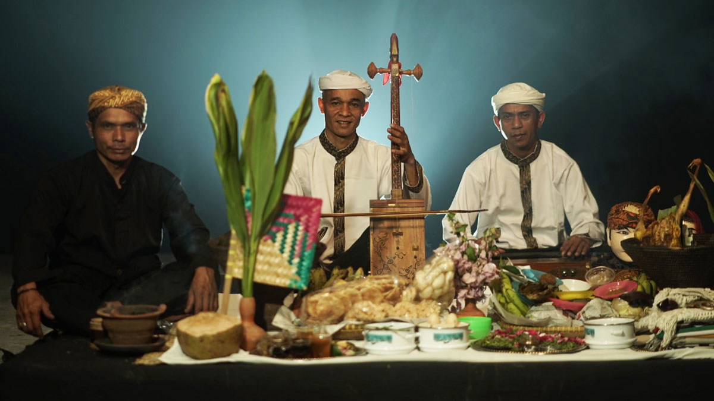

Sejarah
Sumedang dahulu merupakan pusat pemerintahan Kerajaan Sumedang
Larang, yang bercorak Hindu. Kerajaan ini didirikan oleh Prabu Guru
Adji Putih atas perintah Prabu Surya Dewata sebelum Keraton Galuh
dipindahkan ke Pakuan Pajajaran, Bogor. Nama Sumedang diambil dari
nama kerajaan yang ada di kabupaten ini, yaitu Kerajaan Sumedang
Larang. Seiring dengan perubahan zaman dan kepemimpinan, nama
Sumedang mengalami beberapa perubahan.
Nama Sumedang berasal dari kata Insun Medal atau Insun Medangan,
yang berarti “aku dilahirkan; aku menerangi” dalam bahasa Sunda.
Kata Larang berarti sesuatu yang tidak ada tandingannya. Nama
tersebut telah menggambarkan semangat dan kejayaan kerajaan ini di
masa lalu. Pada masa pemerintahan Prabu Tajimalela, putra Prabu Guru
Adji Putih, nama kerajaan ini diganti menjadi Himbar Buana, yang
berarti “menerangi alam”. Prabu Tajimalela dikenal sebagai raja yang
bijaksana dan adil, yang berhasil memperluas wilayah kerajaannya
hingga mencapai Jawa Tengah dan Jawa Timur. Pada tahun 1530,
Kerajaan Sumedang Larang menjadi bagian dari Kesultanan Cirebon,
setelah Ratu Pucuk Umun, putri Prabu Tajimalela, menikah dengan
Sunan Gunung Jati. Ratu Pucuk Umun juga dikenal sebagai Nyi Mas Ratu
Dewi Inten Dewata atau Nyimas Setyasih.
Geografis

Kabupaten Sumedang terdiri atas 26 kecamatan, 7 kelurahan, dan 270
desa. Sumedang, ibu kota kabupaten ini, terletak sekitar 45 km dari
Kota Bandung. Kota ini meliputi kecamatan Sumedang Utara dan
Sumedang Selatan. Sumedang dilintasi jalur utama Bandung - Cirebon.
Bagian Barat Daya wilayah Kabupaten Sumedang merupakan kawasan
pengembangan Kota Bandung. Institut Pemerintahan Dalam Negeri
(IPDN), sebelumnya bernama Sekolah Tinggi Pemerintahan Dalam Negeri
(STPDN), Universitas Pendidikan Indonesia (UPI), Institut Teknologi
Bandung (ITB), serta Universitas Padjajaran (Unpad) berlokasi di
Kecamatan Jatinangor.
Sebagian besar wilayah Sumedang adalah pegunungan, kecuali di
sebagian kecil wilayah utara berupa dataran rendah. Gunung Tampomas
(1.684 mdpl), merupakan dataran tertinggi di kabupaten ini yang
berada di utara Sumedang.
Wisata
Perkembangan Kabupaten Sumedang di sektor wisata semakin pesat,
dengan peningkatan infrastruktur dan promosi destinasi yang kreatif.
Keindahan alamnya, warisan budaya yang kaya, dan program
pengembangan pariwisata lokal telah menjadikan Sumedang sebagai
tujuan wisata menarik yang terus berkembang.
Gunung Kunci
Meskipun dikenal dengan nama Gunung Kunci, namun kawasan wisata ini sebenarnya merupakan sebuah bukit kecil yang letaknya tak jauh dari Alun-alun Kota Sumedang.
Tepatnya berada di sekitar 250 meter sebelah barat alun-alun. Objek wisata bersejarah ini merupakan benteng pertahanan yang dibangun oleh Belanda.
Dimana di dalam benteng terdapat beberapa ruangan yang memiliki fungsinya masing-masing. Kamu bisa menyaksikan peninggalan sejarah ini untuk melengkapi perjalanan wisatamu di Kota Sumedang.
Monumen Lingga
Monumen Lingga berdiri pada tahun 1922 yang diresmikan oleh Gubernur Jenderal Hindia Belanda Dirk Fock dan Tumenggung Kusumadilaga pada tanggal 22 Juli 1922.
Monumen ini merupakan monumen penghormatan kepada Pangeran Aria Suria Atmadja (Bupati Sumedang pada tahun 1883-1919) atas jasa-jasanya dalam mensejahterakan rakyat Sumedang pada masa itu.
Bagian dasar bangunan berbentuk bujur sangkar, bangunan utamanya berupa kubus yang sedikit melengkung disetiap sudut bagian atasnya,
disetiap sisi segi empat monumen terdapat inskripsi berupa cacarakan (Jawa) pada sisi barat dan timur berupa huruf, di sisi utara berhuruf Latin berbahasa Melayu dan
di sisi selatan berhuruf Latin berbahasa Sunda. Dibagian paling atas monumen ini terdapat bangunan setengah lingkaran yang mirip dengan kubah masjid.
Tanjung Duriat
Wisata Alam atau Wana Wisata Tanjung Duriat terletak di pesisir barat laut Bendungan Jatigede.
Tempat wisata ini menyajikan indahnya pemandangan bendungan Jatigede dari atas bukit yang menjorok ke arah bendungan.
Sehingga tidak heran jika dinamakan dengan Tanjung. Kemudian digabung dengan kata Duriat yang berasal dari Bahasa Sunda yang melambangkan kasih sayang.
Namun kasih sayang di sini bukan sekedar menggambarkan cinta kasih. Lebih dari itu, pengunjung bisa merasakan nuansa indahnya Waduk Jatigede dan melihat pelangi di saat hujan, melihat terbenamnya matahari dan munculnya bulan.
Untuk mewakili Wana Wisata Tanjung Duriat ini dibangunlah papan penanda (signboard) Tanjung Duriat dengan ikonnya berbentuk logo cinta (love).
Tempat ini bisa dijadikan tempat untuk berfoto ria bersama teman (wefie) atau berfoto sendiri (selfie). Di Wana Wisata ini juga terdapat wahana lain yang bisa dijadikan tempat berfoto ria yaitu penanda arah ke beberapa
kota yang berada di dunia dan tempat yang berada di seputaran Bendungan Jatigede. Informasi penanda arahnya dilengkapi dengan jarak dari Wana Wisata Tanjung Duriat.
Kemudian bisa juga mengunjungi papan nama Bendungan Jatigede yang berukuran raksasa.
Kuliner
Kabupaten Sumedang terkenal dengan salah satu kuliner khasnya yakni tahu. Namun, selain itu banyak juga kuliner lainnya yang dapat dijadikan sebagai buah tangan atau oleh-oleh pada saat momen mudik lebaran atau perayaan Hari Raya Idul Fitri.
Tahu Sumedang
Tahu menjadi salah satu panganan yang sangat familier di Indonesia. Selain rasanya yang nikmat, tahu juga menjadi salah satu sumber protein nabati yang harganya terbilang cukup murah.
Tahu Sumedang memiliki kekhasannya tersendiri dibanding tahu lainnya. Bagian luarnya yang berwarna kecoklatan akan terasa renyah namun empuk saat gigitan sampai ke dalam.
Tahu Sumedang akan lebih nikmat jika dipadukan dengan makanan buras ditambah dengan cabe rawit hijau. Selain dapat dijadikan sebagai oleh-oleh, tahu Sumedang juga bisa menjadi bekal makanan bagi para pemudik. Makanan yang berasal dari olahan kedelai ini,
biasanya akan dibungkus dengan menggunakan bongsang atau sejenis anyaman bambu dengan dilapisi daun pisang jika hendak dibawa pergi atau mudik.
Ubi Cilembu
Ubi Cilembu menjadi makanan khas Kabupaten Sumedang lainnya yang cukup terkenal setelah tahu Sumedang. Ubi Cilembu dikenal karena rasanya yang berbeda dengan ubi-ubi lainnya. Kekhasan dari ubi Cilembu sendiri adalah saat dipanggang akan mengeluarkan cairan kecoklatan mirip seperti madu.
Rasanya yang gurih menjadikan ubi Cilembu sebagai makanan idola di Kabupaten Sumedang. Keunikan lainnya dalam hal pengolahannya. Ubi Cilembu ini tidak cocok jika dimasak lantaran akan kandungan gulanya yang tinggi menyebabkannya mudah gosong. Ubi Cilembu juga tidak cocok jika di rebus ataupun dikukus
lantaran akan mengurangi atau menghilangkan cairan yang menyerupai madu. Ubi Cilembu sangat nikmat jika disajikan dengan teh panas pahit. Lebih nikmat lagi saat suhu udara dingin sedang dingin, bisa pagi, sore ataupun malam. Karena pengolahannya yang dipanggang, ubi Cilembu cenderung cukup awet dan layak dijadikan sebagai buah tangan.
Peyeum Gantung
Peuyeum gantung merupakan salah satu makanan lainnya yang layak dibawa sebagai oleh-oleh pada saat mudik. Makanan yang berasal dari singkong ini merupakan hasil dari sebuah proses fermentasi.
Disebut peuyeum gantung sebab cara menjajakannya digantung dengan menggunakan tali rafia. Peuyeum tersebut akan nampak di balik sebuah etalase di warung-warung yang ada di pinggiran jalan di wilayah Sumedang.
Peuyeum gantung terbilang makanan yang tidak mudah basi atau awet karena kandungan airnya cukup sedikit. Hal itu berbeda dengan tape singkong lainnya yang cenderung basah atau sedikit banyak mengandung air. Peuyeum gantung dapat ditemui dipusat oleh-oleh ditepian Jalan Raya Bandung -Cirebon atau tepatnya
di seputaran Pamulihan Sumedang atau kawasan Cadas Pangeran. Harga satu kilogram peuyeum gantung rata-rata sekitar Rp 15 ribuaan.
Budaya
Sumedang sebagai wilayah kebudayaan Sunda, memiliki tradisi yang sangat kuat dalam memelihara upacara-upacara adat kesundaa. Hampir bisa dipastikan, Sumedang agak berbeda dengan wilayah-wilayah sunda lainnya seperti Garut, Ciamis, Tasikmalaya,
Bogor dan lainnya dalam memelihara dan menghormati warisan kesundaan, sehingga wajar ketika Pemda Sumedang sejak tahun 2010 telah mencanangkan wilayahnya sebagai “Puseur Budaya Sunda”.
Seni Kuda Renggong
Pada masa lalu, kuda menjadi sarana utama dalam perhubungan dan perang. Di bawah pemerintahan Bupati Soerja Atmaja, atau dikenal sebagai Pangeran Mekah, perkembangan kuda semakin pesat karena seleksi bibit unggul yang dilakukan.
Kuda renggong, sebuah seni pertunjukan yang berakar dari Sumedang, bermula dari observasi seorang anak bernama Sipan, yang kemudian menciptakan gerakan dasar untuk seni tersebut. Kuda renggong menggambarkan keterampilan kuda dalam menari mengikuti irama musik,
sering digunakan dalam berbagai acara seperti khitanan, perayaan hari besar, dan festival. Seni kuda renggong telah menjadi bagian dari kepariwisataan Sumedang dengan festival tahunan yang digelar setiap 29 September. Kuda renggong memiliki busana khusus dan telah menjadi
daya tarik pariwisata yang unik bagi Sumedang. Seni ini terus berkembang, ditandai dengan kuda yang semakin gagah, aksesoris yang semakin beragam, dan peralatan musik yang semakin canggih. Meskipun dikenal sejak tahun 1910, kesenian kuda renggong tetap dijaga dan dilestarikan
oleh para budayawan Sumedang, bahkan semakin meriah dengan penyebarannya ke berbagai tempat di luar wilayah Sumedang.
Tarawangsa

Tarawangsa adalah kesenian rakyat khas masyarakat Sunda, yang melibatkan alat musik gesek dan jenis musik tradisional. Alat musik tarawangsa memiliki dua pengertian: sebagai alat musik gesek dengan dua dawai dan sebagai nama musik tradisional Sunda. Tarawangsa lebih tua dari rebab
dan memiliki kesamaan bentuk dengan Morin Khuur dari Mongolia. Kesenian Tarawangsa hanya dapat ditemukan di beberapa daerah di Jawa Barat, dengan variasi dalam perlengkapan dan repertoar musiknya. Alat musik tarawangsa dimainkan dalam laras pelog, cocok dengan jentrengnya yang juga menggunakan laras pelog.
Pemain tarawangsa terdiri dari dua orang, yang biasanya adalah petani dengan usia rata-rata 50-60 tahun. Pertunjukan Tarawangsa sering terkait dengan upacara padi, melibatkan penari yang mengekspresikan rasa syukur kepada Tuhan. Tarian dalam Tarawangsa tidak terikat oleh aturan pokok, melainkan mengandung
makna metafisik sesuai dengan kepercayaan si penari, kadang-kadang menyebabkan pengalaman trance.